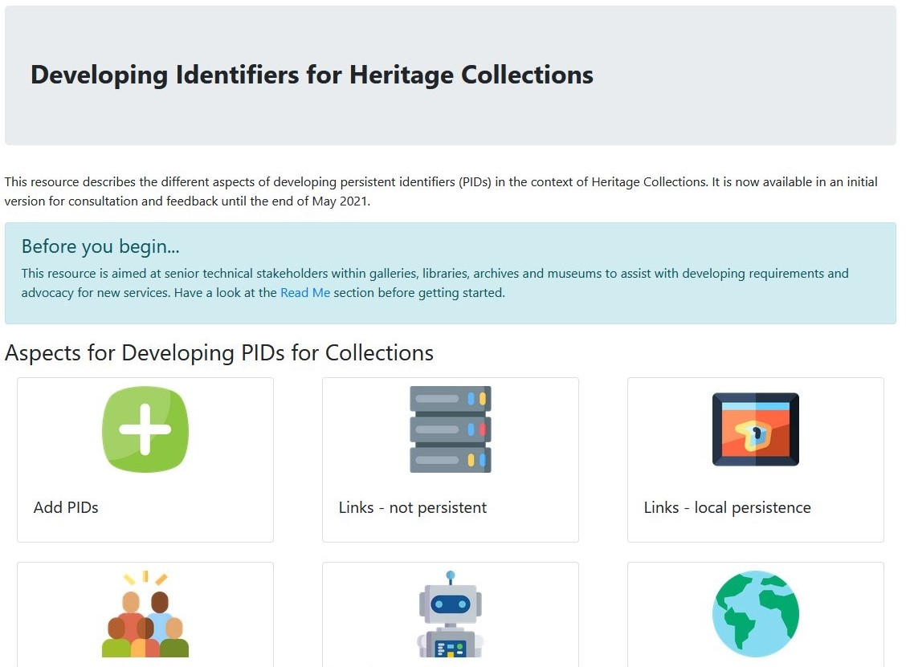

Frances Madden (orcid.org/0000-0002-5432-6116)
Posted 22 July 2021.
We launched Developing Identifiers for Heritage Collections in April 2021. We were keen to gather feedback on the resource we had created and to make sure it was a usable as possible for people working in GLAM organisations who are interested in using persistent identifiers (PIDs).
Thank you!
Firstly, thank you to everyone who contributed their time to feedback to the resource whether that was through Usersnap, Github issues or through one on one or group interviews, your time and help was much appreciated and provided some very valuable insights as to how we could make the resource better.
Feedback
Some of the positive feedback we received was that the page layout was clear and easy to understand. The examples were clear but the images could be bigger. The information was clear and comprehensive and the level of detail appeared useful to testers. The PID functionalities table received a lot of positive feedback but some users struggled with its size and being able to see it all on their screen.
Some of the areas which could be improved were the layout of the tables and the information provided around them. The dashboard style of the homepage was complimented but the directional highlight box was found to be almost too successful and the box which provided guidance about how to get started with the site was overlooked.
 The original homepage layout.
The revised homepage layout.
Changes
Some of the key changes we made were:
- Rearranging the homepage so it is clearer where to go when starting to use the resource and to make sure everyone knows what is meant by persistent identifiers right from the beginning
- Making tables easier to navigate and understand with narrative description, particularly on smaller screens
- Adding in brief descriptions of PIDs to the PID Functionalities table
Revised PID functionalities table.
In the meantime, project co-I, Joseph Padfield from the National Gallery upgraded the whole site to Bootstrap 5, so the site works better on mobile phones particularly.
Guidance links on homepage.
Guidance
In addition, to address some of the recommendations from our Early Findings, we have also published guidance providing more 'how to' guidance in implementing PIDs. It includes information on how to guarantee persistence, how to implement the different types of PIDS and some thoughts on how to estimate the cost of implementing PIDs. We also provided guidance for GLAM organisations on how to encourage citation of their resources using PIDs.
Feedback
We hope you continue to find this resource useful. We are still open to feedback on any of the content so please do tell us what you think or report any issues via the orange feedback button or raise a Github issue through the link in the Feedback box on each page.